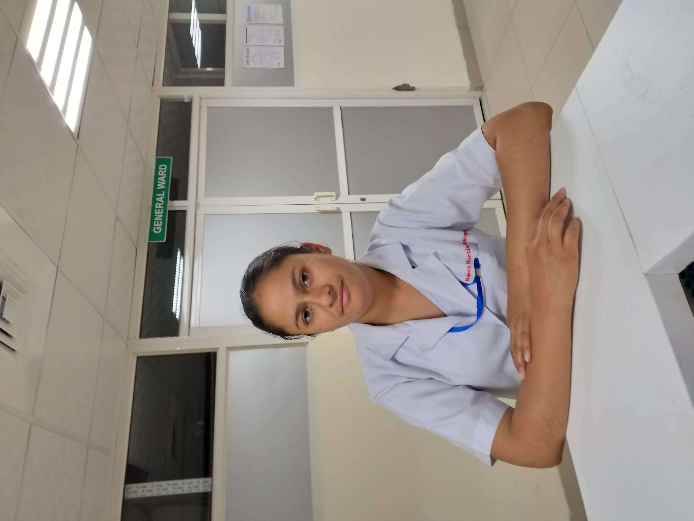
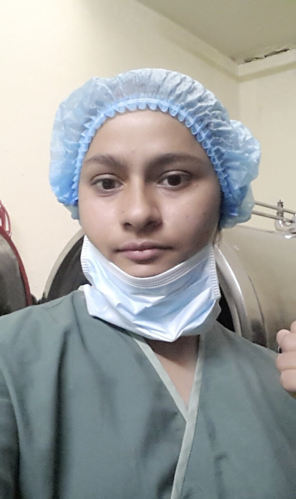
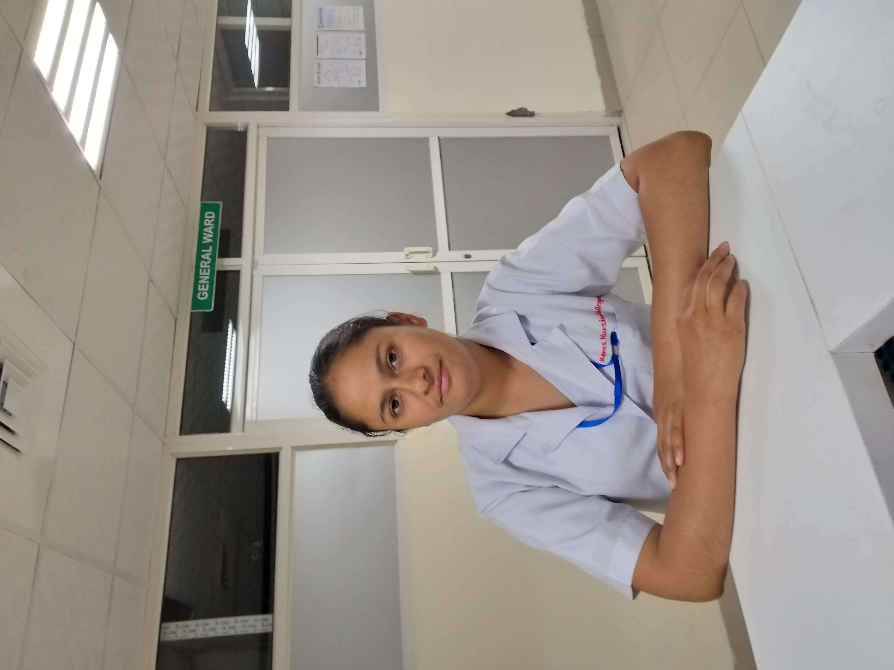
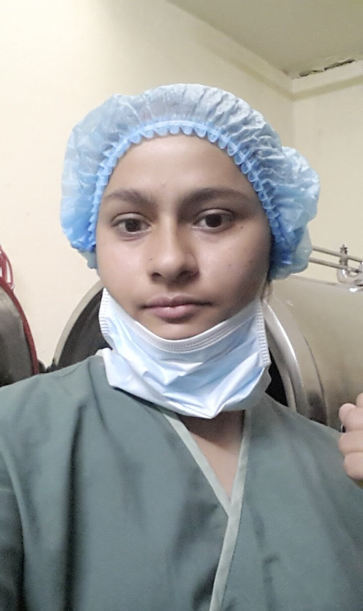
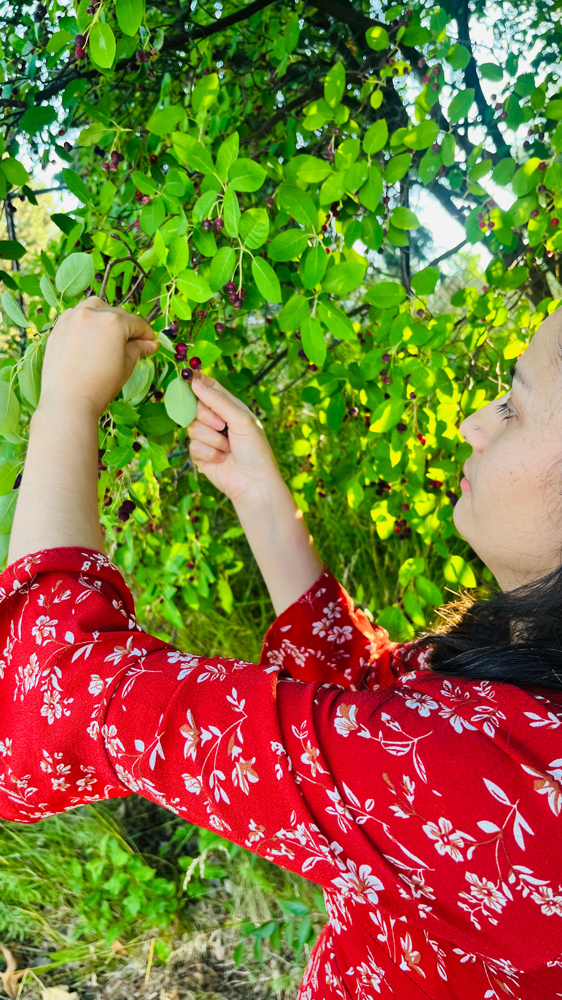
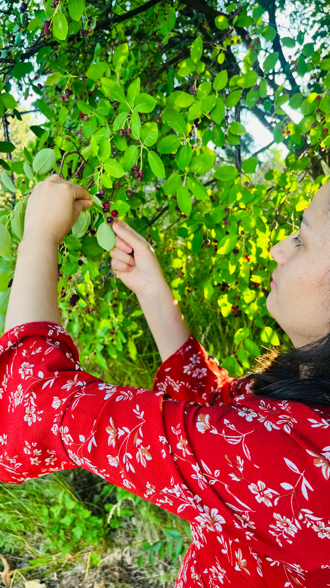

Introduction
Hi, I'm Paru Banjara.
I am an Information Analysis (IA) Student in Bachelor of Science (BSI) program at the University of Michigan. Besides coding, I also have a great passion of exploring in a wide variety of domains, such as design, artworks, photography and travelling.
To talk about my past experiences, I have worked at different hospitals in Nepal as a student nurse. I have directly worked with patients, clients, community members, and health care teams. I have worked with the patients in the most critical situations, such as patient with burn, fracture vertebra, post-operative patient, and patient in labor and delivery. Working as a student nurse, I not only learned a lot of health care related skills and knowledge, but also gained other soft skills, such as working in a team, building interpersonal relationships with people from different domains and backgrounds, working under a stressful situation and acting accordingly, and providing counseling and health guidance to patients and clients.
 



 
